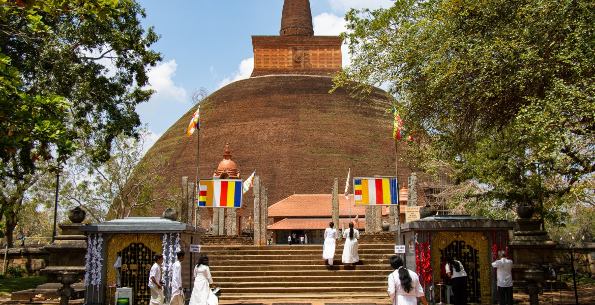
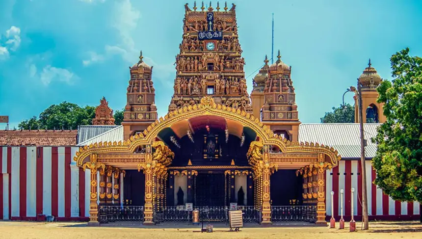
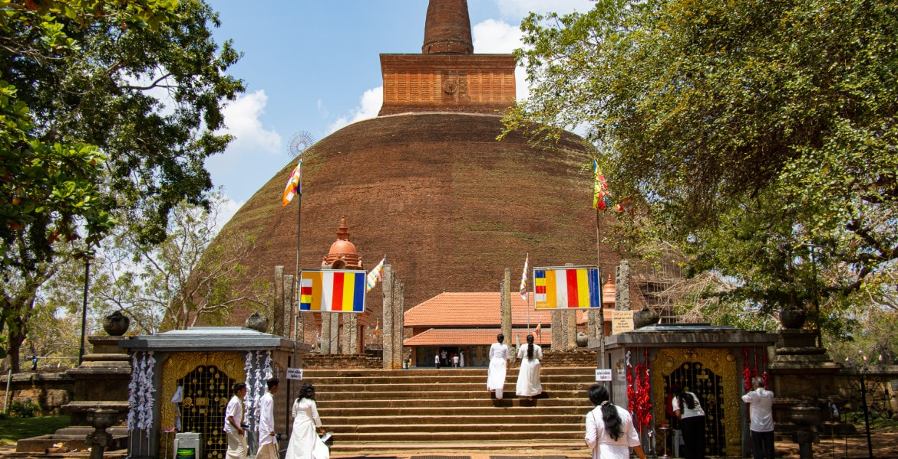
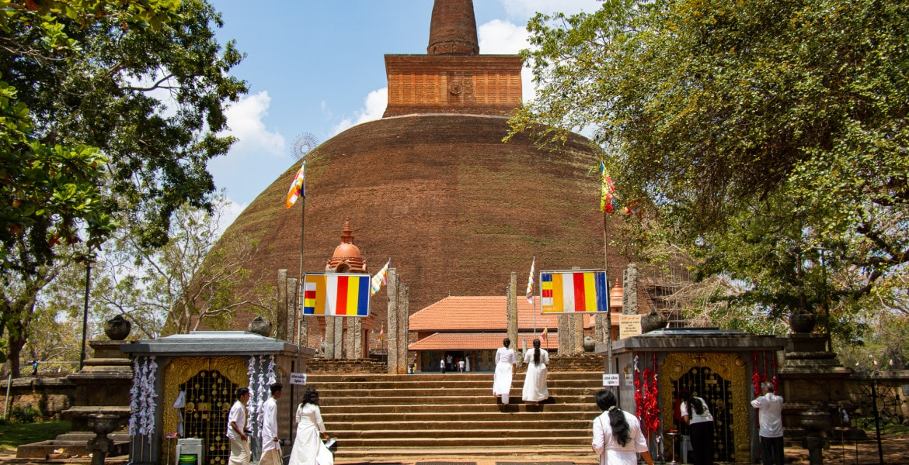
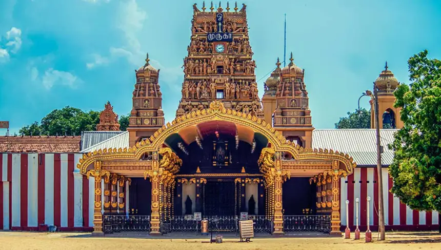
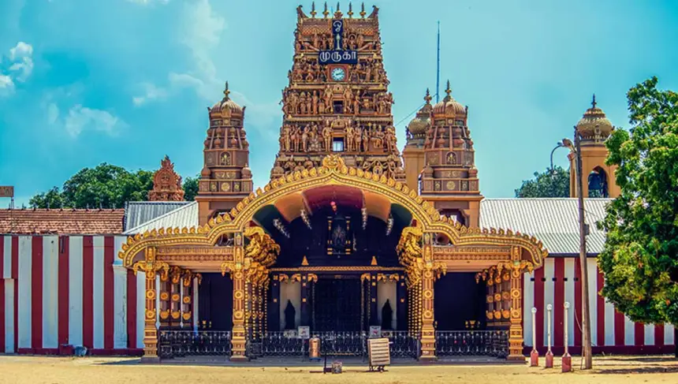

The Places you must visit to see Srilanka's Culture
Sri Lanka offers a wealth of cultural sites that capture the island’s heritage, from ancient cities to sacred temples and vibrant festivals. Here are some must-visit places to experience the depth and beauty of Sri Lankan culture:
1. Anuradhapura 
- Why Visit: Anuradhapura is one of Sri Lanka’s oldest cities and the first ancient capital, known for its well-preserved ruins, sacred Buddhist sites, and iconic dagobas (stupas).
- Highlights: The Sri Maha Bodhi (a revered fig tree grown from a cutting of the tree under which Buddha attained enlightenment), Ruwanwelisaya stupa, and the Jetavanarama stupa, one of the tallest ancient structures in the world.
2. Kandy
- Why Visit: Kandy is the heart of Sri Lankan culture, nestled in the central highlands and home to the Temple of the Sacred Tooth Relic, one of the most sacred Buddhist sites.
- Highlights: The Kandy Esala Perahera, an annual procession featuring traditional dancers, drummers, and elaborately decorated elephants, celebrates the Tooth Relic with grandeur. The city’s picturesque lake and Peradeniya Botanical Gardens also capture its charm.
3. Sigiriya
- Why Visit: Known as the “Lion Rock,” Sigiriya is a UNESCO World Heritage Site and an ancient rock fortress featuring frescoes, mirror walls, and stunning landscapes.
- Highlights: Climb the rock to see the remnants of the ancient palace, stunning frescoes, and the surrounding water gardens. The intricate hydraulic systems showcase advanced ancient engineering.
4. Polonnaruwa
- Why Visit: This medieval city is the second ancient capital of Sri Lanka and houses some of the island’s best-preserved ruins, reflecting the grandeur of its former glory.
- Highlights: The Gal Vihara, a series of Buddha statues carved into granite rock, and the impressive Royal Palace and Quadrangle offer insight into ancient Buddhist architecture and art.
5. Galle Fort
- Why Visit: Galle Fort, a fortified town built by the Portuguese and later expanded by the Dutch, is a testament to Sri Lanka’s colonial past and European architectural influence.
- Highlights: Walking through the cobblestone streets reveals charming Dutch colonial buildings, museums, cafes, and boutiques. Galle Fort is a UNESCO World Heritage Site with a mix of European and South Asian culture.
6. Jaffna 
- Why Visit: Located in the northern part of Sri Lanka, Jaffna is the cultural heartland of Sri Lanka’s Tamil population, known for its unique Tamil culture, Hindu temples, and distinct traditions.
- Highlights: Nallur Kandaswamy Kovil, one of the most important Hindu temples on the island, and the Jaffna Public Library, a symbol of Tamil heritage, are must-sees. The annual Nallur Festival is a vibrant celebration of Tamil Hindu culture.
7. Dambulla Cave Temple
- Why Visit: The Dambulla Cave Temple is the largest and best-preserved cave temple complex in Sri Lanka, with Buddhist statues, murals, and frescoes that date back over 2,000 years.
- Highlights: The temple’s five caves house statues of the Buddha, Hindu deities, and ancient kings, each cave uniquely decorated with vibrant frescoes that narrate stories from Buddhist scriptures.
8. Nuwara Eliya
- Why Visit: Known as “Little England,” Nuwara Eliya’s cool climate, colonial architecture, and sprawling tea plantations capture the British influence in Sri Lanka’s highlands.
- Highlights: Visit tea factories to experience Sri Lanka’s iconic tea culture and take a stroll through the town’s botanical gardens, waterfalls, and quaint British-inspired architecture.
9. Colombo’s Pettah Market and National Museum
- Why Visit: Colombo is the vibrant capital of Sri Lanka and a melting pot of cultures, with colonial architecture, bustling markets, and a rich history of trade and commerce.
- Highlights: Pettah Market, a lively bazaar with spices, textiles, and traditional crafts, showcases the island’s diversity. The National Museum houses ancient artifacts, including the throne of Kandyan kings, giving a glimpse into Sri Lanka’s history.
10. Adam’s Peak (Sri Pada)
- Why Visit: Adam’s Peak is a pilgrimage site that holds significance for Buddhists, Hindus, Muslims, and Christians. The mountain is known for the Sri Pada, or “Sacred Footprint,” believed to be left by Buddha, Shiva, Adam, or Saint Thomas, depending on religious belief.
- Highlights: Pilgrims make the climb to the summit at dawn to witness the breathtaking sunrise and pay homage to the Sacred Footprint. The mountain offers an inspiring blend of spirituality and nature.
11. Trincomalee
- Why Visit: This port city on the eastern coast is known for its mix of cultures, ancient Hindu temples, and beautiful beaches, making it a unique blend of spirituality and relaxation.
- Highlights: Koneswaram Temple, dedicated to Lord Shiva, is perched on a cliff overlooking the Indian Ocean. Hot springs and tranquil beaches like Nilaveli and Uppuveli add to Trincomalee’s charm.
Each of these destinations offers a distinct facet of Sri Lanka’s cultural identity, from ancient Buddhist heritage and colonial architecture to the vibrant multiculturalism of the present day. These locations embody the diverse cultural fabric that has defined Sri Lanka for centuries.

 
.jpeg)
.jpeg)
.jpeg)
.jpeg)
.jpeg)
.jpeg)
.jpeg)
.jpeg)
.jpeg)
.jpeg)
.jpeg) 
.jpeg)
.jpeg)
.jpeg)
.jpeg)
.jpeg)
.jpeg)
.jpeg)
.jpeg)
.jpeg)
.jpeg)
.jpeg)
.jpeg)
.jpeg)
.jpeg)